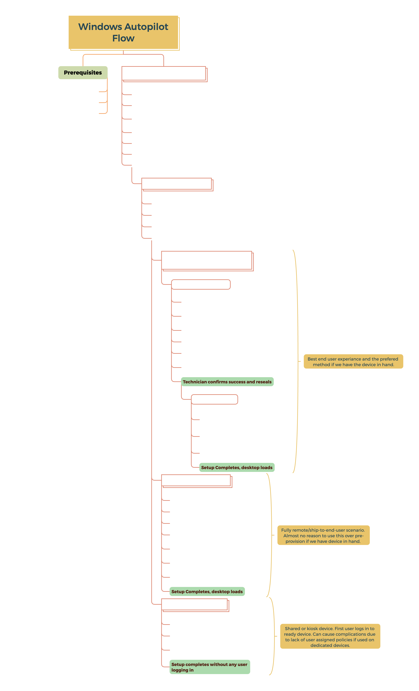

articles
- getting started with intune: some things to watch
- windows autopilot 2025
- securing microsoft business premium pt. 01: laying the foundation
- intune device enrollment errors: mdm enrollment
blogs
- andrew taylor
- patch my pc
- call4cloud
- the deployment guy
- peter van der woude
- intune stuff
- microsoft intune blog
- lazy admin
tools
- cipp
- intune management
- awesome intune
- ffu
- psappdeploytoolkit
- cipp standards
- open intune baseline
- windows autopilot info
- graph x-ray
- m365 documentation
- scuba gear
scripts
reference diagrams
windows autopilot flow
